Virtual Delivery Agent (VDA) 7.6.0 / 7.6.300
Navigation:
- VDA Virtual Machine Hardware
- Windows Configuration
- Install Virtual Delivery Agent 7.6.300
- Updates for Base VDA 7.6.0 (not 7.6.300)
- Citrix Profile Management 5.4.1 :idea:
- Receivers:
- Framehawk Configuration
- Remote Desktop Licensing Configuration
- Reduce C: Drive Permissions
- Configure Pagefile for Provisioning Services
- Direct Access Users Group - allow non-administrators to RDP to the VDA
- Enable Windows Profiles v3/v4
- Registry Settings - HDX Flash for IE 11, published Explorer, 8dot3, HTML5 Clipboard, 4K Monitors
- Restore Legacy Client Drive Mapping
- COM/LPT Port Redirection
- Print Driver for Mac and Linux Clients
- HTML5 Receiver - SSL for VDA
- Anonymous Accounts
- Antivirus
- Optimize Performance
- Seal and Shut Down
- Troubleshooting - Graphics
- Uninstall VDA
:idea: = Recently Updated
Hardware
- If vSphere 6, don’t use hardware version 11 unless you have NVIDIA GRID. VMware 2109650 – Video playback performance issue with hardware version 11 VMs in 2D mode
- For virtual desktops, give the virtual machine: 2+ vCPU and 2+ GB of RAM
- For Windows 2008 R2 RDSH, give the virtual machine 4 vCPU and 12-24 GB of RAM
- For Windows 2012 R2 RDSH, give the virtual machine 8 vCPU, and 24-48 GB of RAM
- Remove the floppy drive
- Remove any serial or LPT ports
- If vSphere:
- To reduce disk space, reserve memory. Memory reservations reduce or eliminate the virtual machine .vswp file.
- The NIC should be VMXNET3.
- If this VDA will boot from Provisioning Services:
- Give the VDA extra RAM for caching.
- Do not enable Memory Hot Plug
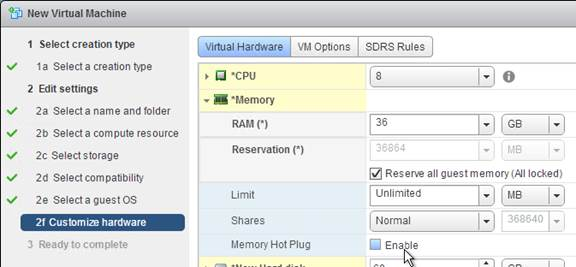
- For vSphere, the NIC must be VMXNET3.
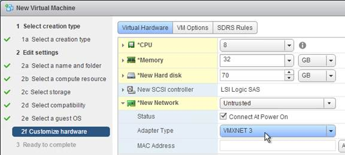
- For vSphere, configure the CD-ROM to boot from IDE instead of SATA. SATA comes with VM hardware version 10. SATA won't work with PvS.
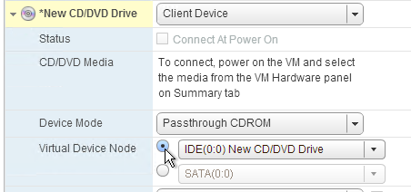
- Install the latest version of drivers (e.g. VMware Tools)
- If Windows 7 on vSphere, don't install the VMware SVGA driver. For more details, see CTX201804 Intermittent Connection Failures/Black Screen Issues When Connecting from Multi-Monitor Client Machines to Windows 7 VDA with VDA 7.x on vSphere/ESXi.
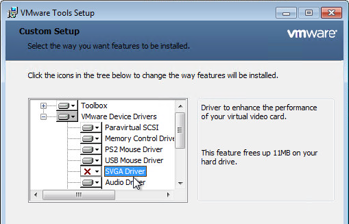
- If Windows 7 on vSphere, don't install the VMware SVGA driver. For more details, see CTX201804 Intermittent Connection Failures/Black Screen Issues When Connecting from Multi-Monitor Client Machines to Windows 7 VDA with VDA 7.x on vSphere/ESXi.
If vSphere, disable NIC Hotplug
- Users could use the systray icon to Eject the Ethernet Controller. Obviously this is bad.

- To disable this functionality, power off the virtual machine.
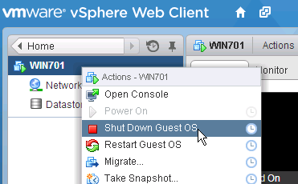
- Once powered off, right-click the virtual machine and click Edit Settings.
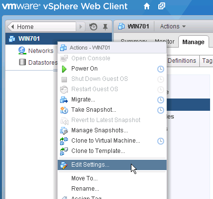
- On the VM Options tab, expand Advanced and then click Edit Configuration.
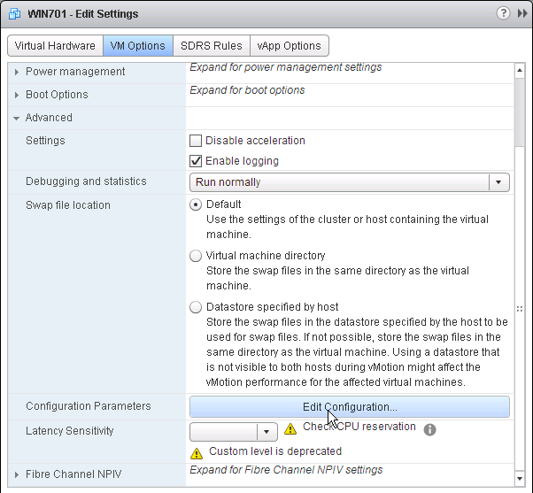
- Click Add Row.
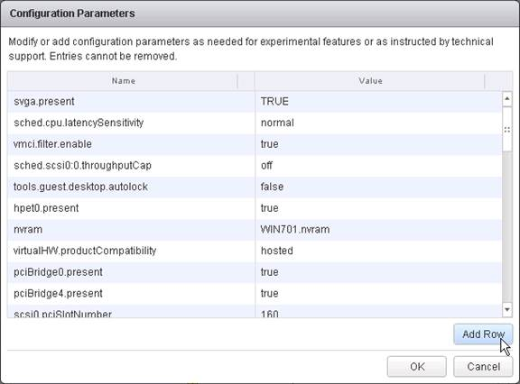
- On the left, enter devices.hotplug. On the right, enter false.
- Then click OK a couple times to close the windows.
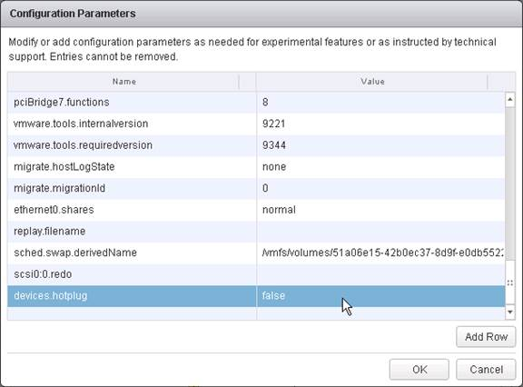
- The VM can then be powered on.
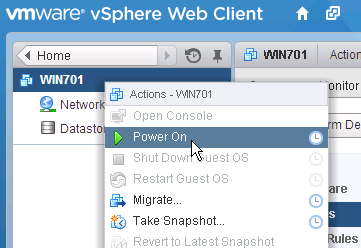
Windows Preparation
- If RDSH, disable IE Enhanced Security Config
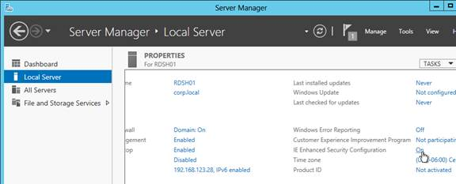
- Optionally, go to Action Center (Windows 8.1 or 2012 R2) or Security and Maintenance (Windows 10) to disable User Account Control and enable SmartScreen .
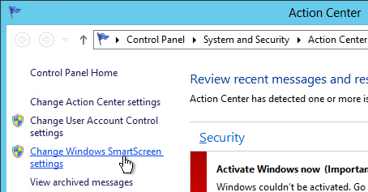
- Run Windows Update.
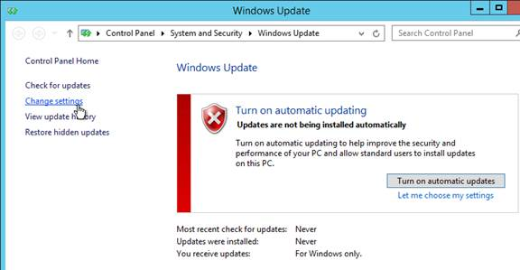
- If Windows Firewall is enabled:
- Enable File Sharing so you can access the VDA remotely using SMB
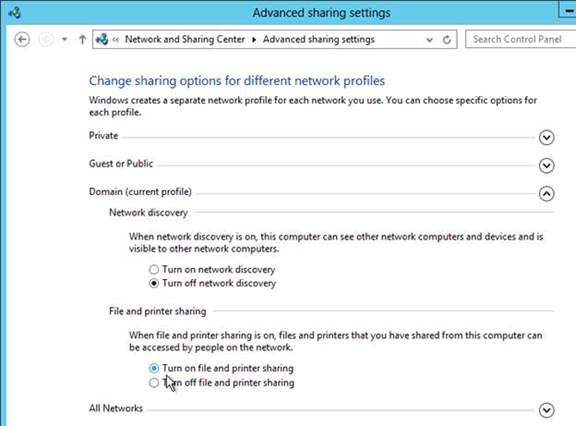
- Enable COM+ Network Access and the three Remote Event Log rules so you can remotely manage the VDA.
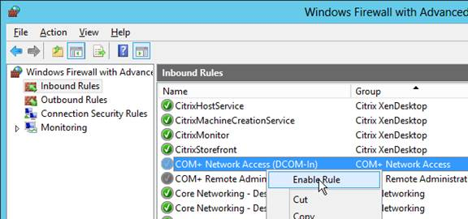
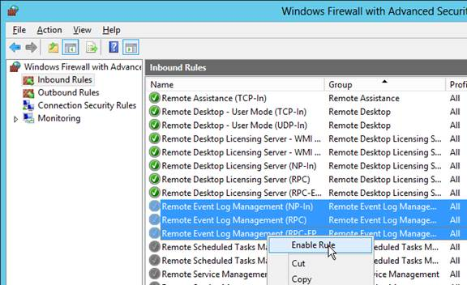
- Enable File Sharing so you can access the VDA remotely using SMB
- Add your Citrix Administrators group to the local Administrators group on the VDA.
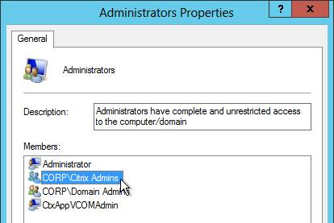
-
The Remote Desktop Services “Prompt for Password” policy prevents Single Sign-on to the Virtual Delivery Agent. Check registry key
HKEY_LOCAL_MACHINE\SOFTWARE\Policies\Microsoft\Windows NT\Terminal Services. If fPromptForPassword = 1 then you need to fix group policy. The following GPO setting will prevent Single Sign-on from working.Computer Configuration \ Policies \ Administrative templates \ Windows Components \ Remotes Desktop Services \ Remote desktop Session Host \ Security \ Always prompt for password upon connectionOr install VDA hotfix 4 and set the registry value
HKEY_LOCAL_MACHINE\SOFTWARE\Citrix\PorticaAutoLogon (DWORD) = 0x10. -
For Windows 7 VDAs that will use Personal vDisk, install Microsoft hotfix 2614892 - A computer stops responding because of a deadlock situation in the Mountmgr.sys driver. This hotfix solved a Personal vDisk Image update issue detailed at Citrix Discussions.
- If this VDA is Windows Server 2008 R2, request and install the Windows hotfixes recommended by Citrix CTX129229. Scroll down to see the list of recommended Microsoft hotfixes for Windows Server 2008 R2. Ignore the XenApp 6.x portions of the article. Also see ../windows-server-2008-r2-post-sp1-hotfixes/.
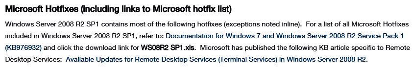
- To remove the built-in apps in Windows 10, see Robin Hobo How to remove built-in apps in Windows 10 Enterprise.
- For Remote Assistance in Citrix Director, configure the GPO setting Computer Configuration\Policies\Administrative Templates\System\Remote Assistance\Offer Remote Assistance. See Jason Samuel - How to setup Citrix Director Shadowing with Remote Assistance using Group Policy for more details.
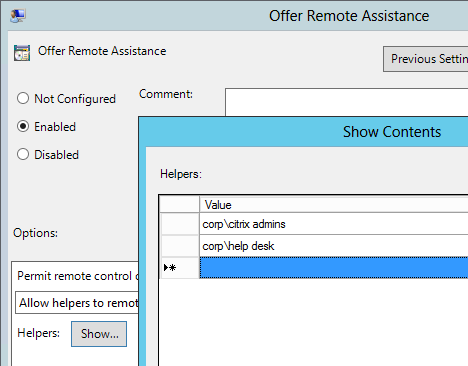
Install Virtual Delivery Agent 7.6.300
VDA 7.6.300 is newer than what's on the base XenApp/XenDesktop 7.6 ISO. If you install 7.6.300 then you don't need to install most of the updates listed later.
- For virtual desktops, make sure you are logged into the console. The VDA won't install if you are connected using RDP.
- For Windows 10, you'll need Citrix Profile Management 5.4 or newer.
- Make sure 8.3 file name generation is not disabled. If so, see CTX131995 - User Cannot Launch Application in Seamless Mode to fix the AppInit_DLLs registry keys.
- Make sure .NET Framework 4.5.1 is installed.
- Go to the downloaded Virtual Delivery Agent 7.6.300 (XenDesktop Platinum, XenDesktop Enterprise, XenApp Platinum, or XenApp Enterprise) and run VDAServerSetup_7.6.300.exe or VDAWorkstationSetup_7.6.300, depending on which type of VDA you are building. If UAC is enabled then you must right-click the installer and click Run as administrator.
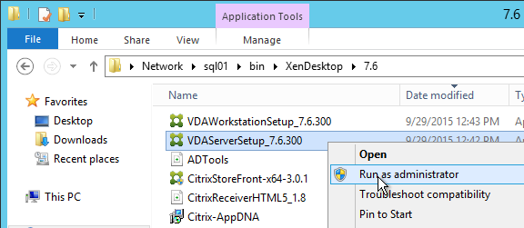
- In the Environment page, select Create a Master Image and click Next.
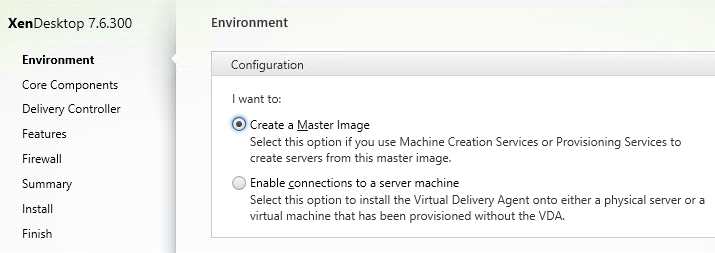
- For virtual desktops, in the HDX 3D Pro page, click Next.
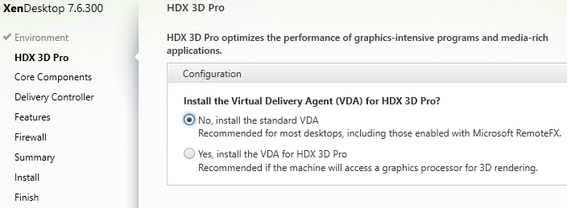
- In the Core Components page, if you don’t need Citrix Receiver installed on your VDA then uncheck the box. Click Next.
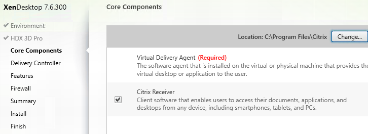
- In the Delivery Controller page, select Do it manually. Enter the FQDN of each Controller. Click Test connection. And then make sure you click Add. Click Next when done.
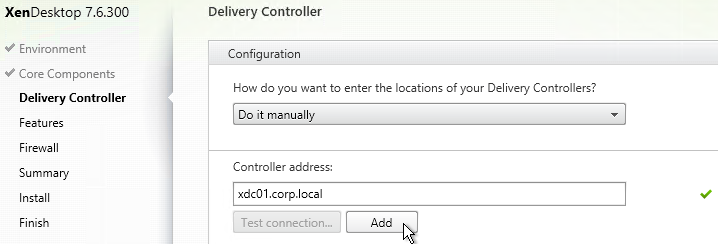
- In the Features page, click Next. If this is a virtual desktop, you can leave Personal vDisk unchecked now and enable it later.
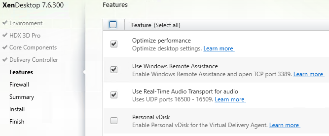
- In the Firewall page, click Next.
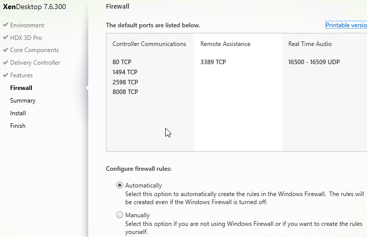
- In the Summary page, click Install.
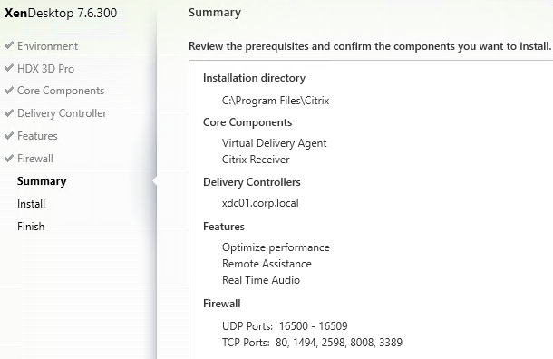
- For RDSH, click Close when you are prompted to restart.
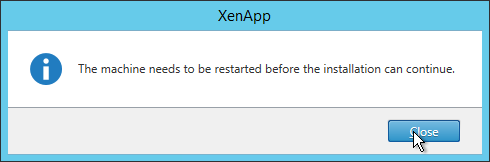
- After the machine reboots twice, login and installation will continue.
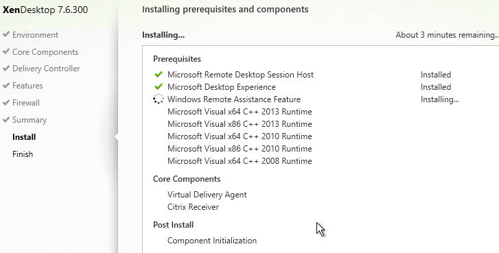
- After installation, click Finish to restart the machine again.
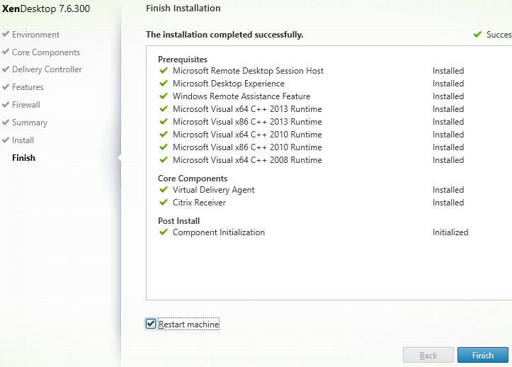
- If 8.3 file name generation is disabled, see CTX131995 - User Cannot Launch Application in Seamless Mode to fix the AppInit_DLLs registry keys.
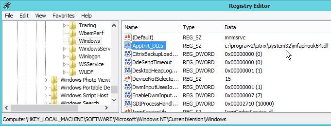
Virtual Delivery Agent 7.6.300 Hotfixes
- Download Virtual Delivery Agent 7.6.300 hotfixes. There are DesktopVDACore hotfixes and ServerVDACore hotfixes, depending on which type of VDA you are building.
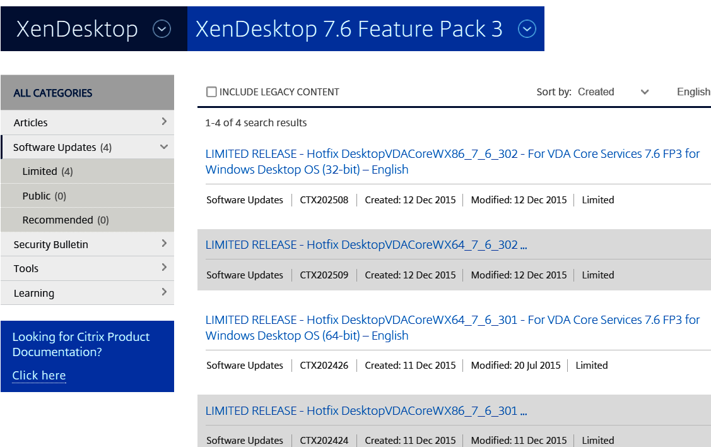
- Install each hotfix by double-clicking the .msp file.
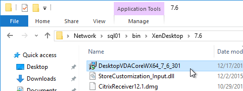
- In the Welcome to the Citrix HDX TS/WS Setup Wizard page, click Next.
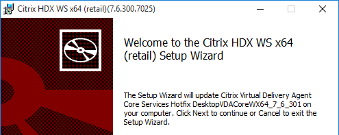
- In the Ready to update page, click Update.
- In the Completed the Citrix HDX TS/WS Setup Wizard page, click Finish.
- When prompted to restart, if you have multiple hotfixes to install, click Cancel.
- Continue installing hotfixes. Restart when done.
Broker Agent 7.6.300 Hotfix 1
- Go to the downloaded Broker Agent 7.6.300 Hotfix 1 and run BrokerAgentWX64_7_6_301.msp.
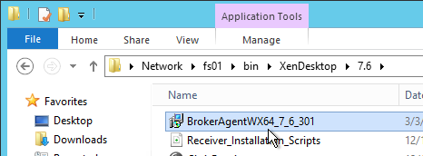
- Install the hotfix. Reboot when prompted.
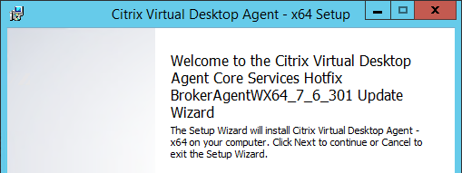
- The file C:\Program Files\Citrix\Virtual Desktop Agent\BrokerAgent.exe is updated to version 7.6.301.
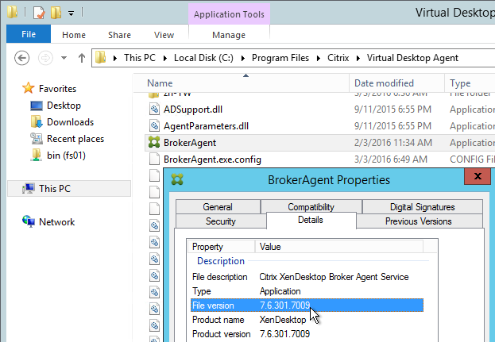
Controller Registration Port
Some environments will not accept the default port 80 for Virtual Delivery Agent registration. To change the port, do the following on the Virtual Delivery Agent:
- Open Programs and Features.
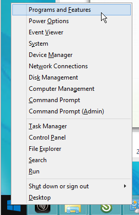
- Find Citrix Virtual Delivery Agent and click Change.
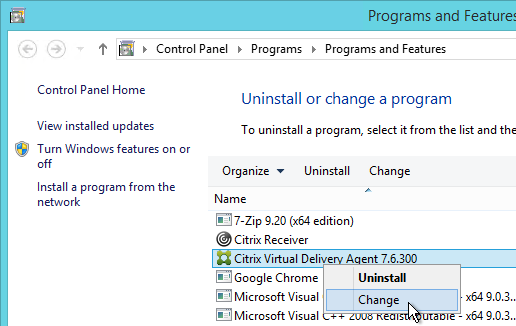
- Click Customize Virtual Delivery Agent Settings.
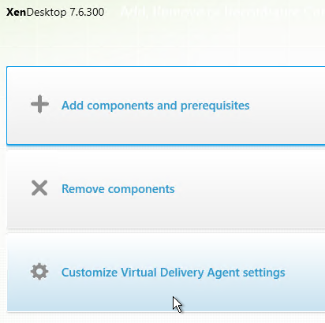
- Edit the Delivery Controllers and click Next.
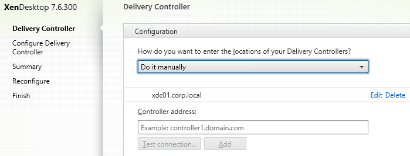
- On the Configure Delivery Controller page, change the port number and click Next.
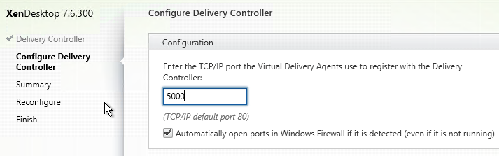
- In the Summary page, click Reconfigure.
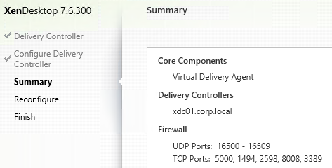
- In the Finish Reconfiguration page, click Finish. The machine automatically restarts.
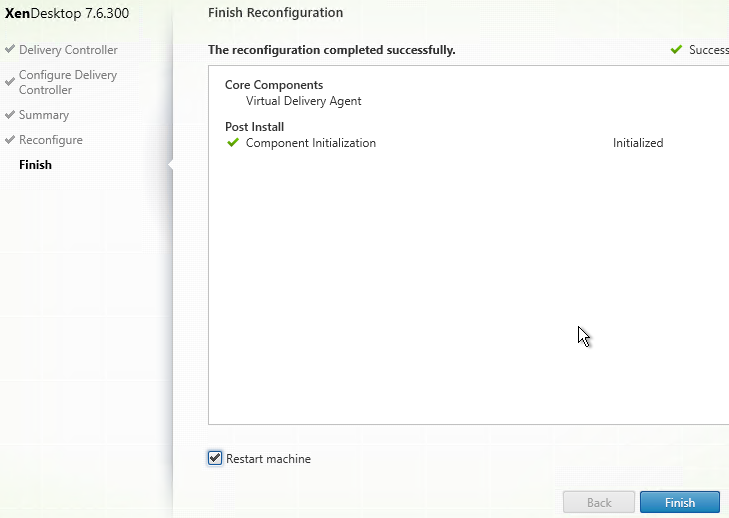
- You must also change the VDA registration port on the Controllers by running
BrokerService.exe /VDAPort.
Controller Registration – Verify
- If you restart the Virtual Delivery Agent machine or restart the Citrix Desktop Service...

- In Windows Logs \ Application, you should see an event 1012 from Citrix Desktop Service saying that it successfully registered with a controller. If you don't see this then you'll need to fix the ListOfDDCs registry key.
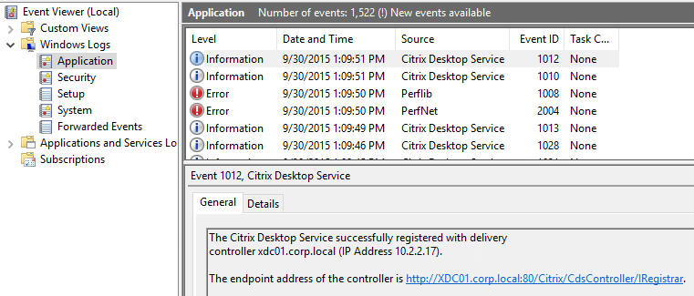
- You can also run Citrix's Health Assistant on the VDA.
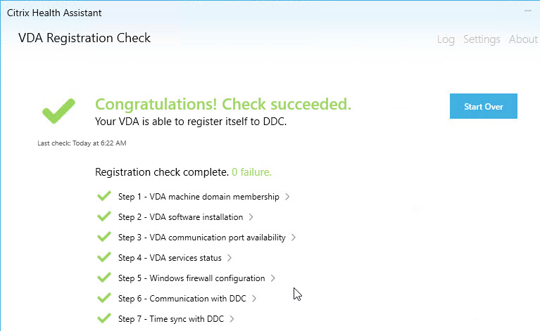
Updates for Base VDA 7.6.0 (not 7.6.300)
If you are installing VDA 7.6.300, then skip to the Citrix Profile Management 5.4.1.
Virtual Delivery Agent Hotfixes
These hotfixes are already included in VDA 7.6.300. Only install these on a base VDA 7.6.0.
Citrix CTX142357 Recommended Hotfixes for XenApp 7.x
- For RDSH, download Virtual Delivery Agent hotfixes for Server OS. These hotfixes will have the letters TS in the name.
- For virtual desktops, download Virtual Delivery Agent hotfixes for Desktop OS. These hotfixes will have the letters WS in the name.
- Install each hotfix by double-clicking the .msp file.
- At a minimum, install VDA 7.6 Hotfix 32 for TS, or 26 for WS x86, or 26 for WS x64. This is required for Framehawk and the Receiver for HTML5 File Transfer functionality.
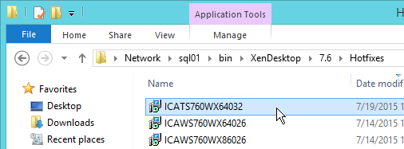
- In the Welcome to the Citrix HDX TS/WS Setup Wizard page, click Next.
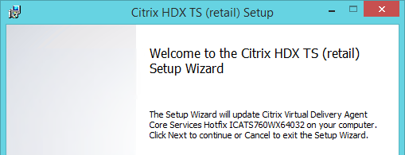
- In the Ready to update page, click Update.
- In the Completed the Citrix HDX TS/WS Setup Wizard page, click Finish.
- When prompted to restart, if you have multiple hotfixes to install, click Cancel.
- Continue installing hotfixes. Restart when done.
Framehawk
VDA 7.6.300 includes these updates. Only install these on a base VDA 7.6.0.
- Download Framehawk Components from XenApp Platinum, XenApp Enterprise, XenDesktop Platinum, or XenDesktop Enterprise, depending on your license.
- Framehawk also requires installation of VDA 7.6 Hotfix 32 for TS, or 26 for WS x86, or 26 for WS x64.
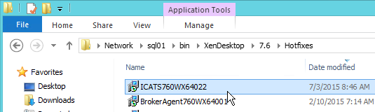
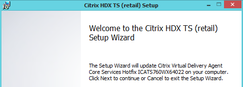
HDX WMI Provider
VDA 7.6.300 includes this update. Only install this on a base VDA 7.6.0.
- Go to the downloaded HDX WMI Provider 2.2 Hotfix 1 and run HDXWMIPROV220WX64001.msi.
- In the Please read the Citrix HDX WMI Provider- x64 2.2.1.0 License Agreement page, check the box next to I accept the terms and click Install.
- In the Completed the Citrix HDX WMI Provider – x64 2.2.1.0 Setup Wizard page, click Finish.
WMI Proxy
VDA 7.6.300 includes this update. Only install this on a base VDA 7.6.0.
- In the Framehawk Components folder (Framehawk7.6FP2), run WMIProxy_x64.msi.
- In the Welcome to the Citrix WMI Proxy Plugin Setup Wizard page, click Next.
- In the End-User License Agreement page, check the box next to I accept the terms and click Next.
- In the Destination Folder page, click Next.
- In the Ready to install Citrix WMI Proxy Plugin page, click Install.
- If you see Files in Use select Close the applications and attempt to restart them and click OK.
- Click OK when prompted that a reboot is required.
- In the Completed the Citrix WMI Proxy Plugin Setup Wizard page, click Finish.
HDX Flash 15.2 Hotfix 1
VDA 7.6.300 includes this update. Only install this on a base VDA 7.6.0.
- If this VDA is RDSH, go to the downloaded HDX Flash 15.2 Hotfix 1 and run CitrixHDXMediaStreamForFlash-ServerInstall-x64.msi.
- In the Please read the Citrix HDX MediaStream for Flash – Server License Agreement page, select I accept the terms and click Install.
- In the Completed the Citrix HDX MediaStream for Flash – Server Setup Wizard page, click Finish.
Universal Print Client 7.6 Hotfix 1
VDA 7.6.300 includes this update. Only install this on a base VDA 7.6.0.
If you intend to use the Universal Print Server, then update the client on the VDA.
- Go to the downloaded Universal Print Client 7.6 Hotfix 1 and run UpsClient760WX64001.msi.
- In the Please read the Citrix Universal Print Client License Agreement page, check the box next to I accept the terms in the License Agreement and click Install.
- If you see the Files in Use page, click OK.
- In the Completed the Citrix Universal Print Client Setup Wizard page, click Finish.
Broker Agent 7.6 Hotfix 2
VDA 7.6.300 includes this update. Only install this on a base VDA 7.6.0.
- Go to the downloaded Broker Agent 7.6 Hotfix 2 x64 (or x86) and run BrokerAgent760WX64002.msi. Note: this is a Limited Release hotfix and regular Citrix Customers can't see it. If you want it, contact a Citrix Partner or Citrix Support.
- In the Welcome to the Citrix Virtual Delivery Agent Core Services Hotfix BrokerAgent760WX64002 Update Wizard page, click Next.
- In the Ready to update Citrix Virtual Delivery Agent – x64 page, click Update.
- In the Completed the Citrix Virtual Delivery Agent – x64 Setup Wizard page, click Finish.
- Click OK to restart.
Group Policy Client Side Extension 2.4 Hotfix 1
VDA 7.6.300 includes this update. Only install this on a base VDA 7.6.0.
- Go to the downloaded Group Policy Client Side Extension 2.4 Hotfix 1 and run GPCSExt240WX64001.msi.
- In the Please read the Citrix Group Policy Client-Side Extension 2.4.1.0 License Agrement page, check the box next to I accept the terms in the License Agreement and click Install.
- In the Completed the Citrix Group Policy Client-Side Extension 2.4.1.0 Setup Wizard page, click Finish.
Personal vDisk 7.6.1
VDA 7.6.300 includes this update. Only install this on a base VDA 7.6.0.
- Go to the downloaded Personal vDisk 7.6.1 and run personalvDisk_x64.msi.
- In the Please read the Citrix personal vDisk License Agreement page, check the box next to I accept the terms in the License Agreement and click Install.
- In the Completed the Citrix personal vDisk Setup Wizard page, click Finish.
- Click Yes to restart.
Profile Management 5.4.1 :idea:
Upgrade this on all VDAs that use Citrix Profile Management.
Warning: If you are upgrading and have existing Windows 2012 R2 profiles based on the !CTX_OSNAME! variable, see http://discussions.citrix.com/topic/374111-psa-upm-54-ctx-osname-server-2012-value-change/ for why your profiles might stop working.
- Go to the downloaded Profile Management 5.4.1 and run profilemgt_x64.msi.
- In the Welcome to the Citrix Profile Management Setup Wizard page, click Next.
- In the End-User License Agreement page, check the box next to I accept the terms in the License Agreement and click Next.
- In the Destination Folder page, click Next.
- In the Ready to install Citrix Profile Management page, click Install.
- If you see Files in Use, click OK.
- Click OK to continue the installation.
- In the Completed the Citrix Profile Management Setup Wizard page, click Finish.
- Click Yes when prompted to restart.
-
UPM 5.4.1 breaks Logon Duration in Citrix Director. To fix it, run the following commands:
C:\Windows\Microsoft.NET\Framework64\v4.0.30319\installutil.exe "C:\Program Files\Citrix\Virtual Desktop Agent\upmWmiMetrics.dll" C:\Windows\Microsoft.NET\Framework64\v4.0.30319\installutil.exe "C:\Program Files\Citrix\Virtual Desktop Agent\upmWmiAdmin.dll"11. See the Profile Management page for configuration instructions.
Upgrade to Receiver 4.4.1000
VDA 7.6.300 does not include this update.
If Receiver is installed on your VDA, upgrade it to version 4.4.5000
- Go to the downloaded 4.4.5000, and run CitrixReceiver.exe.
- In the Welcome to Citrix Receiver page, click Start.
- In the License Agreement page, check the box next to I accept the license agreement and click Next.
- If you see the Enable Single Sign-on page, check the box next to Enable Single Sign-on and click Next.
- In the Help make our products better page, make your selection and click Install.
- After installation, click Finish.
- See the Receiver page for configuration instructions.
HTML5 App Switcher 2.0.2
VDA 7.6.300 does not include this update.
This tool is no longer needed for Receiver for HTML5 2.0 and newer.
- .NET Framework 4.0.3 or newer is required.
- Go to the downloaded Receiver for HTML5 App Switcher (Citrix_AppSwitcher_2.0.2) and run AppSwitcher.msi.
- Check the box next to I accept the terms and click Install.
- In the Completed the App Switcher Setup Wizard page, click Finish.
- In Programs and Features, it is shown as version 2.0.2.25.
Citrix PDF Printer 7.8.0
VDA 7.6.300 does not include this update.
This tool is only used by Receiver for HTML5.
- Go to the downloaded Receiver for HTML5 Citrix PDF Printer 7.8.0 (Citrix_PDFPrinter_7.8.0) and run CitrixPDFPrinter64.msi.
- In the Please read the Citrix PDF printer License Agreement page, check the box next to I accept the terms and click Install.
- In the Completed the Citrix PDF Universal Driver Setup Wizard page, click Finish.
- In Programs and Features, it is shown as version 7.8.0.10.
- Configure a Citrix Policy to enable the PDF printer. The setting is called Auto-create PDF Universal Printer.
Framehawk Configuration
To enable Framehawk, see ../citrix-policy-settings/#framehawkconfig
Remote Desktop Licensing Configuration
On 2012 R2 RDSH, the only way to configure Remote Desktop Licensing is using group policy (local or domain). This procedure also works for 2008 R2 RDSH. This procedure is not needed on virtual desktops.
- For local group policy, run gpedit.msc.
- Go to Computer Configuration > Administrative Templates > Windows Components > Remote Desktop Services > Remote Desktop Session Host > Licensing.
- Double-click Use the specified Remote Desktop license servers. Change it to Enabled and enter the names of the RDS Licensing Servers (typically installed on XenDesktop Controllers). Click OK.
- Double-click Set the Remote Desktop licensing mode. Change it to Enabled and select Per User. Click OK.
- In Server Manager, open the Tools menu, expand Terminal Services and click RD Licensing Diagnoser.

- The Diagnoser should find the license server and indicate the licensing mode. It’s OK if there are no licenses installed on the Remote Desktop License Server.
Several people in Citrix Discussions reported the following issue: If you see a message about RD Licensing Grace Period has expired even though RD Licensing is properly configured, see Eric Verdumen No remote Desktop Licence Server availible on RD Session Host server 2012. The solution was to delete the REG_BINARY in HKEY_LOCAL_MACHINE\SYSTEM\CurrentControlSet\Control\Terminal Server\RCM\GracePeriod only leaving the default. You must take ownership and give admin users full control to be able to delete this value.
C: Drive Permissions
This section is more important for shared VDAs like Windows 2008 R2 and Windows 2012 R2.
The default permissions allow users to store files on the C: drive in places other than their profile.
- Open the Properties dialog box for C:\.
- On the Security tab, click Advanced.
- Highlight the line containing Users and Create Folders and click Remove.
- Highlight the line containing Users and Special and click Remove. Click OK.
- Click Yes to confirm the permissions change.
- If you see any of these Error Applying Security windows, click Continue.
- Click OK to close the C: drive properties.
Pagefile
If this image will be converted to a Provisioning Services vDisk, then you must ensure the pagefile is smaller than the cache disk. For example, if you allocate 20 GB of RAM to your Remote Desktop Session Host, and if the cache disk is only 15 GB, then Windows will have a default pagefile size of 20 GB and Provisioning Services will be unable to move it to the cache disk. This causes Provisioning Services to cache to server instead of caching to your local cache disk (or RAM).
- Open System. In 2012 R2, you can right-click the Start button and click System.
- Click Advanced system settings.
- On the Advanced tab, click the top Settings button.
- On the Advanced tab, click Change.
- Either turn off the pagefile or set the pagefile to be smaller than the cache disk. Don’t leave it set to System managed size. Click OK several times.
Direct Access Users
When Citrix Virtual Delivery Agent is installed on a machine, non-administrators can no longer RDP to the machine. A new local group called Direct Access Users is created on each Virtual Delivery Agent. Add your non-administrator RDP users to this local group so they can RDP directly to the machine.
Windows Profiles v3/v4/v5
Roaming Profiles are compatible only between the following client and server operating system pairs. The profile version is also listed.
- v5 = Windows 10 and Windows Server 2016
- v4 = Windows 8.1 and Windows Server 2012 R2
- v3 = Windows 8 and Windows Server 2012
- v2 = Windows 7 and Windows Server 2008 R2
- v2 = Windows Vista and Windows Server 2008
Windows 8.1 and 2012 R2 don't properly set the profile version. To fix this, ensure update rollup 2887595 is installed. http://support.microsoft.com/kb/2890783. After you apply this update, you must create a registry key before you restart the computer.
- Run regedit.
-
Locate and then tap or click the following registry subkey:
HKEY_LOCAL_MACHINE\System\CurrentControlset\Services\ProfSvc\Parameters -
On the Edit menu, point to New, and then tap or click DWORD Value.
- Type UseProfilePathExtensionVersion.
- Press and hold or right-click UseProfilePathExtensionVersion, and then tap or click Modify.
- In the Value data box, type 1, and then tap or click OK.
- Exit Registry Editor.
Then, Windows 8.1 creates a user profile and appends the suffix ".v4" to the profile folder name to differentiate it from version 2 of the profile in Windows 7 and version 3 of the profile in Windows 8.
Registry
HDX Flash
From Citrix Knowledgebase article CTX139939 - Microsoft Internet Explorer 11 - Citrix Known Issues: The registry key value IEBrowserMaximumMajorVersion is queried by the HDX Flash service to check for maximum Internet Explorer version that HDX Flash supports. For Flash Redirection to work with Internet Explorer 11 set the registry key value IEBrowserMaximumMajorVersion to 11 on the machine where HDX flash service is running. In case of XenDesktop it would be the machine where VDA is installed.
- Key =
HKLM\SOFTWARE\Wow6432Node\Citrix\HdxMediaStreamForFlash\Server\PseudoServer- Value =
IEBrowserMaximumMajorVersion(DWORD) = 00000011 (Decimal)
- Value =
From Citrix Discussions: Add the DWORD 'FlashPlayerVersionComparisonMask=0' on the VDA under HKLM\Software\Wow6432Node\Citrix\HdxMediaStreamForFlash\Server\PseudoServer. This disables the Flash major version checking between the VDA and Client Device.
Published Explorer
This section applies if you intend to publish apps from this VDA.
From Citrix Knoweldgebase article CTX128009 - Explorer.exe Fails to Launch: When publishing the seamless explorer.exe application, the session initially begins to connect as expected. After the loading, the dialog box disappears and the explorer application fails to appear. On the VDA, use the following registry change to set the length of time a client session waits before disconnecting the session:
- Key = HKLM
\SYSTEM\CurrentControlSet\Control\Citrix\wfshell\TWI- Value =
LogoffCheckerStartupDelayInSeconds(DWORD) = 10 (Hexadecimal)
- Value =
Mfaphook – 8.3 File Names
- Open a command prompt.
- Switch to C:\ by running cd \
- Run dir /x program*
- If you don’t see PROGRA~1 then 8.3 is disabled. This will break Citrix.
- If 8.3 is disabled, open regedit and go to HKLM\Software\Microsoft\Windows NT\CurrentVersion\Windows.
- On the right is AppInit_DLLs. Edit it and remove the path in front of MFAPHOOK64.DLL.
Logon Disclaimer Window Size
From Xenapp 7.8 - Session Launch Security/Warning Login Banner at Citrix Discussions: If your logon disclaimer window has scroll bars, set the following registry values:
HKLM\Software\Wow6432node\Citrix\CtxHook\AppInit_DLLS\Multiple Monitor Hook\LogonUIWidth = DWORD:300 HKLM\Software\Wow6432node\Citrix\CtxHook\AppInit_DLLS\Multiple Monitor Hook\LogonUIHeight = DWORD:200
Login Timeout
Citrix CTX203760 VDI Session Launches Then Disappears: XenDesktop, by default, only allows 180 seconds to complete a logon operation. The timeout can be increased by setting the following:
HKLM\SOFTWARE\Citrix\PortICA
Add a new DWORD AutoLogonTimeout and set the value to decimal 240 or higher (up to 3600).
Also see Citrix Discussions Machines in "Registered" State, but VM closes after "Welcome" screen.
Receiver for HTML5 Enhanced Clipboard
From About Citrix Receiver for Chrome 1.9 at docs.citrix.com: To enable enhanced clipboard support, set registry value HKEY_LOCAL_MACHINE\SYSTEM\CurrentControlSet\Control\Citrix\wfshell\Virtual Clipboard\Additional Formats\HTML Format\Name="HTML Format". Create any missing registry keys. This applies to both virtual desktops and Remote Desktop Session Hosts. 
4K Monitors
Citrix CTX201696 - Citrix XenDesktop and XenApp – Support for Monitors Including 4K Resolution and Multi-monitors: Up to eight 4K monitors are supported with the Std-VDA and RDS VDA irrespective of underlying GPU support, provided the required policies and/or registry keys are correctly configured. Currently the Std-VDA for XenDesktop and RDS-VDA for XenApp does not support resolutions higher than 4094 in any dimension.
Framehawk currently does not support 4K monitors. At the time of writing, the number of monitors supported is 1, the use of more monitors will cause the graphics mode to change from Framehawk to Thinwire to support multi-monitor. The maximum resolution supported by Framehawk is currently 2048x2048.
From CTX200257 - Screen Issues Connecting to 4K Resolution Monitors: Symptom: A blank or corrupt screen is displayed when connecting to Windows 7 or 8.1 Standard XenDesktop Virtual Delivery Agents on a client which has one or more 4K resolution monitors.
-
Calculate the video memory that is required for 4K monitor using the following formula:
Sum of total monitors (Width * height * 4 * X) where width and height are resolution of the monitor.
X = 2 if VDA is Windows 7 OR X = 3 if VDA is Windows 8\8.1
Suppose a Windows 7 VDA is connecting to a client that has dual 4K monitors (3840x2160), then video buffer should be: (3840 x 2160 x 4 x 2) + (3840 x 2160 x 4 x 2) = ~132MB
-
Open the registry (regedit) and navigate to: HKEY_LOCAL_MACHINE\SYSTEM\CurrentControlSet\services\vd
- Increase the value of "MaxVideoMemoryBytes” REG_DWORD value to the above calculated memory.
- Reboot the VDA.
When using Thinwire, Compatibility, Thinwire Plus or Legacy modes, the Display memory Limit policy needs to be configured appropriately for Std-VDA, as per Graphics Policy Settings at docs.citrix.com. The Default value for Display memory Limit is 65536KB and this is sufficient up to 2x4K monitors (2x32400KB). You can find more information on Graphics modes at Citrix Blogs - Site Wide View of HDX Graphics Modes.
Legacy Client Drive Mapping
Citrix Knowledgebase article How to Enable Legacy Client Drive Mapping Format on XenApp: Citrix Client Drive Mapping no longer uses drive letters and instead they appear as local disks. This is similar to RDP drive mapping.
The old drive letter method can be enabled by setting the registry value:
- Key =
HKEY_LOCAL_MACHINE\SOFTWARE\Citrix\UncLinks(create the key)- Value =
UNCEnabled(DWORD) = 0
- Value =
When you reconnect, the client drives will be mapped as drive letters (starts with V: and goes backwards).
COM/LPT Port Redirection
To signal Citrix' intention to deprecate COM and LPT support in a future major release, policy settings for COM Port and LPT Port Redirection have moved from Studio to the registry, and are now located under HKLM\Software\Citrix\GroupPolicy\Defaults\Deprecated on either your Master VDA image or your physical VDA machines. The registry values are detailed in docs.citrix.com.
Print Driver for Non-Windows Clients
This section applies to Windows 2012 R2, Windows 8.1, and Windows 10 VDAs.
From Mac Client Printer Mapping Fix for Windows 8/8.1 and Windows Server 2012/2012R2. By default, Non-Windows clients cannot map printers due to a missing print driver on the VDA machine.
- Requirements:
- Internet Access
- Windows Update service enabled
- Click Start and run Devices and Printers.
- In the Printers section, highlight a local printer (e.g. Microsoft XPS Document Writer). Then in the toolbar click Print server properties.
- Switch to the Drivers tab. Click Change Driver Settings.
- Then click Add.
- In the Welcome to the Add Printer Driver Wizard page, click Next.
- In the Processor Selection page, click Next.
- In the Printer Driver Selection page, click Windows Update. The driver we need won’t be in the list until you click this button. Internet access is required.
- Once Windows Update is complete, highlight HP on the left and then select HP Color LaserJet 2800 Series PS (Microsoft) on the right. Click Next.
- In the Completing the Add Printer Driver Wizard page, click Finish.
- Repeat these instructions to install the following additional drivers:
- HP LaserJet Series II
- HP Color LaserJet 4500 PCL 5
SSL for VDA
If you intend to use HTML5 Receiver internally, install certificates on the VDAs so the WebSockets (and ICA) connection will be encrypted. Internal HTML5 Receivers will not accept clear text WebSockets. External users don’t have this problem since they are SSL-proxied through NetScaler Gateway. Notes:
- Each Virtual Delivery Agent needs a machine certificate that matches the machine name. This is feasible for a small number of persistent VDAs. For non-persistent VDAs, you’ll need some automatic means for creating machine certificates every time they reboot.
- As detailed in the following procedure, use PowerShell on the Controller to enable SSL for the Delivery Group. This forces SSL for every VDA in the Delivery Group, which means every VDA in the Delivery Group must have SSL certificates installed.
The Citrix blog post How To Secure ICA Connections in XenApp and XenDesktop 7.6 using SSL has a method for automatically provisioning certificates for pooled virtual desktops by enabling certificate auto-enrollment and setting up a task that runs after the certificate has been enrolled. Unfortunately this does not work for Remote Desktop Session Host.
The following instructions can be found at Configure SSL on a VDA using the PowerShell script at docs.citrix.com.
- On the VDA machine, run mmc.exe.
- Add the Certificates snap-in.
- Point it to Local Computer.
-
Request a certificate from your internal Certificate Authority. You can use either the Computer template or the Web Server template.
You can also use group policy to enable Certificate Auto-Enrollment for the VDA computers.
-
Browse to the XenApp/XenDesktop 7.6 ISO. In the \Support\Tools\SslSupport folder, shift+right-click the Enable-VdaSSL.ps1 script and click Copy as path.
- Run PowerShell as administrator (elevated).
- In the PowerShell prompt, type in an ampersand (&), and a space.
- Right-click the PowerShell prompt to paste in the path copied earlier.
- At the end of the path, type in
-Enable - If there’s only one certificate on this machine, press Enter.
-
If there are multiple certificates, you’ll need to specify the thumprint of the certificate you want to use. Open the Certificates snap-in, open the properties of the machine certificate you want to use, and copy the Thumbprint from the Details tab.
In the PowerShell prompt, at the end of the command, enter
?CertificateThumbPrint, add a space, and type quotes (").Right-click the PowerShell prompt to paste the thumbprint.
Type quotes (
") at the end of the thumbprint. Then remove all spaces from the thumbprint. The thumbprint needs to be wrapped in quotes. -
If this VDA machine has a different service already listening on 443 (e.g. IIS), then the VDA needs to use a different port for SSL connections. At the end of the command in the PowerShell prompt, enter
-SSLPort 444or any other unused port. - Press <Enter> to run the Enable-VdaSSL.ps1 script.
- Press
twice to configure the ACLs and Firewall. - You might have to reboot before the settings take effect.
- Login to a Controller and run PowerShell as Administrator (elevated).
- Run the command
asnp Citrix.* -
Enter the command:
Get-BrokerAccessPolicyRule -DesktopGroupName '<delivery-group-name>' | Set-BrokerAccessPolicyRule ?HdxSslEnabled $truewhere
is the name of the Delivery Group containing the VDAs. 19. You can run Get-BrokerAccessPolicyRule -DesktopGroupName '_<delivery-group-name>_'to verify that HDX SSL is enabled. 20. Also run the following command:
You should now be able to connect to the VDA using the HTML5 Receiver from internal machines.
Anonymous Accounts
If you intend to publish apps anonymously then follow this section.
- Anonymous accounts are created locally on the VDAs. When XenDesktop creates Anon accounts it gives them an idle time as specified at HKEY_LOCAL_MACHINE\SYSTEM\CurrentControlSet\Control\Citrix\AnonymousUserIdleTime. The default is 10 minutes. Adjust as desired.
- You can pre-create the Anon accounts on the VDA by running "C:\Program Files\Citrix\ICAConfigTool\CreateAnonymousUsersApp.exe". If you don’t run this tool then Virtual Delivery Agent will create them automatically when users log in.
- You can see the local Anon accounts by opening Computer Management, expanding System Tools, expand Local Users and Groups and clicking Users.
- If you open one of the accounts, on the Sessions tab, notice that idle timeout defaults to 10 minutes. Feel free to change it.
Group Policy for Anonymous Users
Since Anonymous users are local accounts on each Virtual Delivery Agent, domain-based GPOs will not apply. To work around this limitation, you’ll need to edit the local group policy on each Virtual Delivery Agent.
- On the Virtual Delivery Agent, run mmc.exe.
- Open the File menu and click Add/Remove Snap-in.
- Highlight Group Policy Object Editor and click Add to move it to the right.
- In the Welcome to the Group Policy Wizard page, click Browse.
- On the Users tab, select Non-Administrators.
- Click Finish.
- Now you can configure group policy to lockdown sessions for anonymous users. Since this is a local group policy, you’ll need to repeat the group policy configuration on every Virtual Delivery Agent image. Also, Group Policy Preferences is not available in local group policy.
Antivirus
Install antivirus using your normal procedure. Instructions vary for each Antivirus product.
Microsoft’s virus scanning recommendations (e.g. exclude group policy files) - http://support.microsoft.com/kb/822158.
Citrix’s Recommended Antivirus Exclusions
Citrix CTX127030 Citrix Guidelines for Antivirus Software Configuration: Based on Citrix Consulting’s field experience, organizations might wish to consider configuring antivirus software on session hosts with the settings below.
- Scan on write events or only when files are modified. It should be noted that this configuration is typically regarded as a high security risk by most antivirus vendors. In high-security environments, organizations should consider scanning on both read and write events to protect against threats that target memory, such as Conficker variants.
- Scan local drives or disable network scanning. This assumes all remote locations, which might include file servers that host user profiles and redirected folders, are being monitored by antivirus and data integrity solutions.
- Exclude the pagefile(s) from being scanned.
- Exclude the Print Spooler directory from being scanned.
- Remove any unnecessary antivirus related entries from the Run key (HKLM\Software\Microsoft\Windows\Current Version\Run).
- If using the streamed user profile feature of Citrix Profile management, ensure the antivirus solution is configured to be aware of Hierarchical Storage Manager (HSM) drivers. For more information, refer to Profile Streaming and Enterprise Antivirus Products.
Symantec
Symantec links:
- Symantec TECH91070 Citrix and terminal server best practices for Endpoint Protection.
- Symantec TECH197344 Best practices for virtualization with Symantec Endpoint Protection 12.1.2
- Symantec TECH180229 Symantec Endpoint Protection 12.1 - Non-persistent Virtualization Best Practices
- Symantec TECH123419 How to prepare Symantec Endpoint Protection clients on virtual disks for use with Citrix Provisioning Server has a script that automates changing the MAC address registered with Symantec.
- Citrix Blog Post How to prepare a Citrix Provisioning Services Target Device for Symantec Endpoint Protection
Non-persistent session hosts:
After you have installed the Symantec Endpoint Protection client and disabled Tamper Protection, open the registry editor on the base image.
- Navigate to HKEY_LOCAL_MACHINE\SOFTWARE\Symantec\Symantec Endpoint Protection\SMC\.
- Create a new key named Virtualization.
- Under Virtualization, create a key of type DWORD named IsNPVDIClient and set it to a value of 1.
To configure the purge interval for offline non-persistent session host clients:
- In the Symantec Endpoint Protection Manager console, on the Admin page, click Domains.
- In the Domains tree, click the desired domain.
- Under Tasks, click Edit Domain Properties.
- On the Edit Domain Properties > General tab, check the Delete non-persistent VDI clients that have not connected for specified time checkbox and change the days value to the desired number. The Delete clients that have not connected for specified time option must be checked to access the option for offline non-persistent VDI clients.
- Click OK.
Make the following changes to the Communications Settings policy:
- Configure clients to download policies and content in Pull mode
- Disable the option to Learn applications that run on the client computers
- Set the Heartbeat Interval to no less than one hour
- Enable Download Randomization, set the Randomization window for 4 hours
Make the following changes to the Virus and Spyware Protection policy:
- Disable all scheduled scans
- Disable the option to "Allow startup scans to run when users log on" (This is disabled by default)
- Disable the option to "Run an ActiveScan when new definitions Arrive"
Avoid using features like application learning which send information to the SEPM and rely on client state to optimize traffic flow
Linked clones:
To configure Symantec Endpoint Protection to use Virtual Image Exception to bypass the scanning of base image files
- On the console, open the appropriate Virus and Spyware Protection policy.
- Under Advanced Options, click Miscellaneous.
- On the Virtual Images tab, check the options that you want to enable.
- Click OK
Trend Micro
Citrix CTX136680 - Slow Server Performance After Trend Micro Installation. Citrix session hosts experience slow response and performance more noticeable while users try to log in to the servers. At some point the performance of the servers is affected, resulting in issues with users logging on and requiring the server to be restarted. This issue is more noticeable on mid to large session host infrastructures.
Trend Micro has provided a registry fix for this type of issue. Create the following registry on all the affected servers. Add new DWORD Value as:
[HKEY_LOCAL_MACHINE\SYSTEM\CurrentControlSet\Services\TmFilter\Parameters] "DisableCtProcCheck"=dword:00000001
Trend Micro Links:
- Trend Micro Docs - Trend Micro Virtual Desktop Support
- Trend Micro Docs - VDI Pre-Scan Template Generation Tool
- Trend Micro 1055260 - Best practice for setting up Virtual Desktop Infrastructure (VDI) in OfficeScan
- Trend Micro 1056376 - Frequently Asked Questions (FAQs) about Virtual Desktop Infrastructure/Support In OfficeScan
Optimize Performance
VDA Optimizer
Installation of the VDA might have already done this but there's no harm in doing it again. This tool is only available if you installed VDA in Master Image mode.
- On the master VDA, go to C:\Program Files\Citrix\PvsVm\TargetOSOptimizer and run TargetOSOptimizer.exe.
- Then click OK. Notice that it disables Windows Update.
RDSH
Citrix CTX131577 XenApp 6.x (Windows 2008 R2) - Optimization Guide is a document with several registry modifications that are supposed to improve server performance. Ignore the XenApp 6 content and instead focus on the Windows content.
Citrix CTX131995 User Cannot Launch Application in Seamless Mode in a Provisioning Services Server when XenApp Optimization Best Practices are Applied. Do not enable NtfsDisable8dot3NameCreation
Norskale has Windows 2008 R2 Remote Desktop and XenApp 6 Tuning Tips Update.
Windows 7
Microsoft has compiled a list of links to various optimization guides.
It's a common practice to optimize a Windows 7 virtual machine (VM) template (or image) specifically for VDI use. Usually such customizations include the following.
- Minimize the footprint, e.g. disable some features and services that are not required when the OS is used in “stateless” or “non-persistent” fashion. This is especially true for disk-intensive workloads since disk I/O is a common bottleneck for VDI deployment. (Especially if there are multiple VMs with the same I/O patterns that are timely aligned).
- Lock down user interface (e.g. optimize for specific task workers).
With that said the certain practices are quite debatable and vary between actual real-world deployments. Exact choices whether to disable this or that particular component depend on customer requirements and VDI usage patterns. E.g. in personalized virtual desktop scenario there's much less things to disable since the machine is not completely “stateless”. Some customers rely heavily on particular UI functions and other can relatively easily trade them off for the sake of performance or standardization (thus enhance supportability and potentially security). This is one of the primary reasons why Microsoft doesn't publish any “VDI Tuning” guide officially.
Though there are a number of such papers and even tools published either by the community or third parties. This Wiki page is aimed to serve as a consolidated and comprehensive list of such resources.
Daniel Ruiz XenDesktop Windows 7 Optimization and GPO’s Settings -
Microsoft Whitepaper Performance Optimization Guidelines for Windows 7 Desktop Virtualization
Windows 10 / Windows 8.1 / Windows 2012 R2
- VMware's OS Optimization Tool plus Login VSI's tuning template
- James Rankin Improving Windows 10 logon time:
- Use Remove-AppXProvisionedPackage to remove Modern apps. See the article for a list of apps to remove.
- Import a Standard Start Tiles layout (Export-StartLayout)
- Create a template user profile
- Citrix’s Windows 8 and 8.1 Virtual Desktop Optimization Guide contains the following:
- A list of services to disable
- A list of computer settings
- A list of scheduled tasks to disable
- A script to do all of the above
- Carl Luberti (Microsoft) Windows 10 VDI Optimization Script
- Microsoft’s Windows 8 VDI optimization script.
- Desktop Virtualization Best Practice Analyzer
Optimization Notes:
- If this machine is provisioned using Provisioning Services, do not disable the Shadow Copy services.
- Windows 8 detects VDI and automatically disables SuperFetch. No need to disable it yourself.
- Windows 8 automatically disables RSS and TaskOffload if not supported by the NIC.
Seal and Shut Down
If this session host will be a master image in a Machine Creation Services or Provisioning Services catalog, after the master is fully prepared (including applications), do the following:
- Go to the properties of the C: drive and run Disk Cleanup.
- On the Tools tab, click Optimize to defrag the drive. `
- Run slmgr.vbs /dlv and make sure it is licensed with KMS and has at least one rearm remaining. It is no longer necessary to manually rearm licensing. XenDesktop will do it automatically.

- Run Delprof2 to clean up local profiles. Get it from http://helgeklein.com/download/.
- Machine Creation Services and Provisioning Services require DHCP.
Session hosts commonly have DHCP reservations.
- Shut down the master image. You can now use Studio or Provisioning Services to create a catalog of linked clones.
Troubleshooting - Graphics
For an explanation of Citrix’s graphics policy settings, see A graphical deep dive into XenDesktop 7 and What’s new with HDX display in XenDesktop & XenApp 7.x?
Citrix Knowledgebase article CTX200370 - How to Determine HDX Display Mode: Use wmic or HDX Monitor as described in the article to determine which of the following display mode options is being used:
- DCR (Desktop Composition Redirection)
- H.264 / H.264 Compatibility Mode
- Legacy Graphics Mode
Citrix Blog Post – Site Wide View of HDX Graphics Modes; PowerShell script to display graphics mode of currently connected sessions.
From Citrix Discussions: If you experience graphics performance problems in XenDesktop 7.6, consider configuring the following settings:
- ICA \ Desktop UI \ Desktop Composition Redirection = Disabled
- ICA \ Graphics \ Legacy Graphics Mode = Enabled
Citrix Blog post - Optimising the performance of HDX 3D Pro – Lessons from the field
From Citrix Tips – Black Screen Issues with 7.x VDA: Users would make a successful ICA connection but the screen would stay totally black.
[HKEY_LOCAL_MACHINE\SYSTEM\CurrentControlSet\services\vbdenum]
- "Start"=dword:00000001
- "MaxVideoMemoryBytes"=dword:06000000
- "Group"= "EMS"
[HKEY_LOCAL_MACHINE\SYSTEM\CurrentControlSet\services\vd3d]
- "MaxVideoMemoryBytes"=dword:00000000
From Citrix Knowledgebase article CTX200257 - Screen Issues Connecting to 4K Resolution Monitors in DCR Mode:
-
Calculate the video memory that is required for 4K monitor using the following formula:
Sum of total monitors (Width * height * 4 * X) where width and height are resolution of the monitor.
X = 2 if VDA is Windows 7 OR X = 3 if VDA is Windows 8\8.1\10
Example: Suppose a Windows 7 VDA is connecting to a client that has dual 4K monitors (3840x2160), then video buffer should be: (3840x160 x 4 x 2) + (3840 x 2160 x 4 x 2) = ~115MB
-
Open the registry (regedit) and navigate to: HKEY_LOCAL_MACHINE\SYSTEM\CurrentControlSet\services\vd3v****
- Increase the value of "MaxVideoMemoryBytes” REG_DWORD value to the above calculated memory.
- Reboot the VDA
From Citrix Discussions: To exclude applications from Citrix 3D rendering, create a REG_DWORD registry value “app.exe” with value 0 or a registry value “*” with value 0.
- XD 7.1 and XD 7.5:
- x86: reg add hklm\software\citrix\vd3d\compatibility /v * /t REG_DWORD /f /d 0
- x64: reg add hklm\software\Wow6432Node\citrix\vd3d\compatibility /v * /t REG_DWORD /f /d 0
- XD 7.6 both x86 and x64:
- reg add hklm\software\citrix\vd3d\compatibility /v * /t REG_DWORD /f /d 0
Wildcards are not supported. The asterisk * here has a special meaning “all apps” but is not a traditional wildcard. To blacklist multiple apps e.g. both appa.exe and appb.exe must be done by creating a registry value for each app individually.
This is most problematic in Remote PC since most physical PCs have GPUs. I recently had to blacklist Internet Explorer to prevent lockup issues when switching back to physical.
Uninstall VDA
Uninstall the VDA from Programs and Features.
Then see CTX209255 VDA Cleanup Utility.